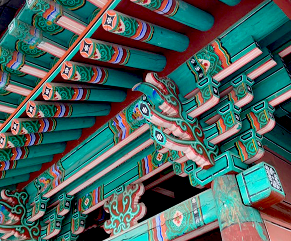

Infinity
 |
 |
우리는 평소 무한함에 대해 쉽게 말하곤 한다. ‘난 무한한 잠재력을 가진 사람이야.’ 혹은 ‘널 영원히 사랑할 거야.’ 처럼 말이다. 그러나 잠시만 시간을 가지고 생각해 본다면, 무한함은 절대 쉽거나 가벼운 개념이 아니다.
무한함에 대해 깊이 생각할 때면 때로 나는 그 끝없음에 두려움을 느낀다. 내가 상상할 수 있는 가장 멀리의 시간과 가장 큰 양을 떠올리더라도 무한함은 그 너머에 있다는 사실의 무게가 내 가슴을 짓누르는 것 같다. 호흡이 가빠지고 머리가 어지러워질 때쯤 나는 생각을 멈춘다. 무한의 개념 앞에서 내 존재는 너무나 작고 나약하다.
나의 죽음에 대한 두려움도 사실 죽음 그 자체보다는 죽음 너머의 영원에 대한 두려움에 가깝다. ‘영원한 안식’이라는 표현을 사용하곤 하지만 과연 ‘영원’과 ‘안식’을 동일선상에 놓을 수 있는가? 영원하다는 점에서 그것은 이미 고통이 아닌가?
나는 무한을 이해할 수 없고, 영원이 두렵다.